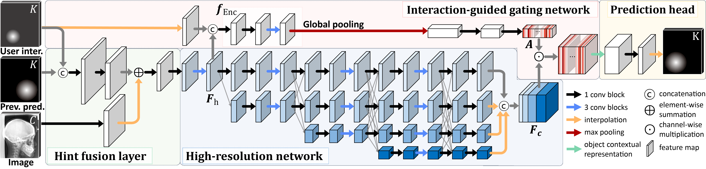
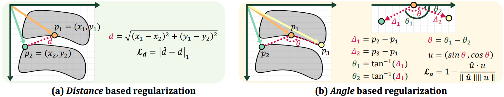

Video
Method overview



Diagnosis based on medical images, such as X-ray images, often involves manual annotation of anatomical keypoints. However, this process involves significant human efforts and can thus be a bottleneck in the diagnostic process. To fully automate this procedure, deep-learningbased methods have been widely proposed and have achieved high performance in detecting keypoints in medical images. However, these methods still have clinical limitations: accuracy cannot be guaranteed for all cases, and it is necessary for doctors to double-check all predictions of models. In response, we propose a novel deep neural network that, given an Xray image, automatically detects and refines the anatomical keypoints through a user-interactive system in which doctors can fix mispredicted keypoints with fewer clicks than needed during manual revision. Using our own collected data and the publicly available AASCE dataset, we demonstrate the effectiveness of the proposed method in reducing the annotation costs via extensive quantitative and qualitative results.



@inproceedings{kim2022morphology,
title={Morphology-aware interactive keypoint estimation},
author={Kim, Jinhee and
Kim, Taesung and
Kim, Taewoo and
Choo, Jaegul and
Kim, Dong-Wook and
Ahn, Byungduk and
Song, In-Seok and
Kim, Yoon-Ji},
booktitle={International Conference on Medical Image Computing and
Computer-Assisted Intervention},
pages={675--685},
year={2022},
organization={Springer}
}